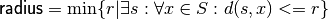

geometry package¶
Subpackages¶
- geometry.distances package
- geometry.manifolds package
- Subpackages
- geometry.manifolds.tests package
- Submodules
- geometry.manifolds.tests.checks_generation module
- geometry.manifolds.tests.embedding_test module
- geometry.manifolds.tests.manifold_tests module
- geometry.manifolds.tests.matrix_groups_tests module
- geometry.manifolds.tests.pickling_tests module
- geometry.manifolds.tests.sphere_tests module
- Module contents
- geometry.manifolds.todo package
- geometry.manifolds.tests package
- Submodules
- geometry.manifolds.differentiable_manifold module
- geometry.manifolds.embedding_relations module
- geometry.manifolds.euclidean module
- geometry.manifolds.exceptions module
- geometry.manifolds.group module
- geometry.manifolds.manifold_embedding_propagation module
- geometry.manifolds.manifold_relations module
- geometry.manifolds.matrix_lie_algebra module
- geometry.manifolds.matrix_lie_group module
- geometry.manifolds.matrix_lie_group_tangent module
- geometry.manifolds.matrix_linear_space module
- geometry.manifolds.point_set module
- geometry.manifolds.product_manifold module
- geometry.manifolds.special_euclidean_algebra module
- geometry.manifolds.special_euclidean_group module
- geometry.manifolds.special_orthogonal_algebra module
- geometry.manifolds.special_orthogonal_group module
- geometry.manifolds.sphere module
- geometry.manifolds.square module
- geometry.manifolds.tangent_bundle module
- geometry.manifolds.torus module
- geometry.manifolds.torus01 module
- geometry.manifolds.translation_algebra module
- geometry.manifolds.translation_group module
- Module contents
- Subpackages
- geometry.subspaces package
- geometry.unittests package
- Submodules
- geometry.unittests.distances_test module
- geometry.unittests.mds_test module
- geometry.unittests.misc_tests module
- geometry.unittests.poses_test module
- geometry.unittests.procrustes_test module
- geometry.unittests.quaternions_test module
- geometry.unittests.random_geometry_density_tests module
- geometry.unittests.random_geometry_tests module
- geometry.unittests.rotations_tests module
- geometry.unittests.spheres_tests module
- geometry.unittests.uniform_dist_pvalue_paranoia module
- geometry.unittests.utils module
- geometry.unittests.utils_test module
- Module contents
- geometry.utils package
Submodules¶
geometry.basic_utils module¶
-
geometry.basic_utils.deprecated(func)[source]¶ This is a decorator which can be used to mark functions as deprecated. It will result in a warning being emitted when the function is used.
-
geometry.basic_utils.normalize_length(s, norm=2)[source]¶ Normalize an array such that it has unit length in the given norm.
geometry.constants module¶
geometry.formatting module¶
geometry.mds_algos module¶
-
geometry.mds_algos.best_embedding_on_sphere(C, ndim, embed=<function inner_product_embedding>)¶
-
geometry.mds_algos.euclidean_distances(S)[source]¶ Computes the euclidean distance matrix for the given points.
geometry.poses module¶
-
geometry.poses.SE2_from_SE3(pose, check_exact=True, z_atol=1e-06)[source]¶ Projects a pose in SE3 to SE2.
If check_exact is True, it will check that z = 0 and axis ~= [0,0,1].
-
geometry.poses.SE2_from_rotation_translation(R, t)¶
-
geometry.poses.SE2_from_se2(vel)[source]¶ Converts from Lie algebra representation to pose.
See Bullo, Murray “PD control on the euclidean group” for proofs.
-
geometry.poses.SE2_from_translation_angle(t, theta)[source]¶ Returns an element of SE2 from translation and rotation.
-
geometry.poses.SE2_from_xytheta(xytheta)[source]¶ Returns an element of SE2 from translation and rotation.
-
geometry.poses.SE3_from_rotation_translation(R, t)¶
-
geometry.poses.rotation_translation_from_SE2(pose)¶
-
geometry.poses.rotation_translation_from_SE3(pose)¶
-
geometry.poses.se2_from_SE2(pose)[source]¶ Converts a pose to its Lie algebra representation.
See Bullo, Murray “PD control on the euclidean group” for proofs.
geometry.poses_embedding module¶
geometry.procrustes module¶
-
geometry.procrustes.best_orthogonal_transform(X, Y)[source]¶ Finds the best orthogonal transform R between X and Y, such that R X ~= Y.
geometry.rotations module¶
Contains all about rotation matrices, quaternions, and various conversions.
conventions: q=( a + bi + cj + dk), with a>0
-
geometry.rotations.angle_from_rot2d(R)¶
-
geometry.rotations.axis_angle_from_quaternion(q)[source]¶ This is the inverse of
quaternion_from_axis_angle().
-
geometry.rotations.axis_angle_from_rotation(R)[source]¶ Returns the (axis,angle) representation of a given rotation.
There are a couple of symmetries:
- By convention, the angle returned is nonnegative.
- If the angle is 0, any axis will do.
In that case,
default_axis()will be returned.
-
geometry.rotations.check_SO(x)[source]¶ Checks that the given value is a rotation matrix of arbitrary size.
-
geometry.rotations.check_skew_symmetric(x)[source]¶ Check that the argument is a skew-symmetric matrix.
-
geometry.rotations.geodesic_distance_for_rotations(R1, R2)[source]¶ Returns the geodesic distance between two rotation matrices.
It is computed as the angle of the rotation
 .
.
-
geometry.rotations.quaternion_from_axis_angle(axis, angle)[source]¶ Computes a quaternion corresponding to the rotation of angle radians around the given axis.
This is the inverse of
axis_angle_from_quaternion().
-
geometry.rotations.quaternion_from_rotation(R)[source]¶ Converts a rotation matrix to a quaternion.
This is the robust method mentioned on wikipedia:
<http://en.wikipedia.org/wiki/Quaternions_and_spatial_rotation>
TODO: add the more robust method with 4x4 matrix and eigenvector
-
geometry.rotations.random_quaternion()[source]¶ Generate a random quaternion.
Uses the algorithm used in Kuffner, ICRA‘04.
-
geometry.rotations.random_rotation(ndim=3)[source]¶ Generate a random rotation matrix.
This is a wrapper around
random_quaternion().
-
geometry.rotations.rot2d(theta)¶ Returns a 2x2 rotation matrix.
-
geometry.rotations.rot2d_from_angle(theta)¶ Returns a 2x2 rotation matrix.
-
geometry.rotations.rotation_from_axes_spec(x_axis, vector_on_xy_plane)[source]¶ Creates a rotation matrix from the axes.
x_axisis the new direction of the (1,0,0) vector after this rotation.vector_on_xy_planeis a vector that must end up in the (x,y) plane after the rotation.That is, it holds that:
R = rotation_from_axes_spec(x, v) dot(R,x) == [1,0,0] dot(R,v) == [?,?,0]
TODO: add exception if vectors are too close.
-
geometry.rotations.rotation_from_axis_angle(axis, angle)[source]¶ Computes the rotation matrix from the (axis,angle) representation using Rodriguez’s formula.
-
geometry.rotations.rotation_from_axis_angle2(axis, angle)[source]¶ Get the rotation from the (axis,angle) representation.
This is an alternative to
rotation_from_axis_angle()which goes through the quaternion representation instead of using Rodrigues’ formula.
geometry.rotations_embedding module¶
geometry.spheres module¶
-
geometry.spheres.any_orthogonal_direction(s)[source]¶ Returns any axis orthogonal to s (not necessarily random).
-
geometry.spheres.default_axis()[source]¶ Returns the axis to use when any will do.
For example, the identity is represented by a rotation of 0 degrees around any axis. If an (axis,angle) representation is requested, the axis will be given by default_axis().
-
geometry.spheres.default_axis_orthogonal()[source]¶ Returns an axis orthogonal to the one returned by
default_axis().Use this when you need a couple of arbitrary orthogonal axes.
-
geometry.spheres.distances_from(S, s)[source]¶ Returns the geodesic distances on the sphere from a set of points S to a given point s.
-
geometry.spheres.distribution_radius(S)[source]¶ Returns the radius of the given directions distribution.
The radius is defined as the minimum r such that there exists a point s in S such that all distances are within r from s.

-
geometry.spheres.geodesic_distance_on_sphere(s1, s2)[source]¶ Returns the geodesic distance between two points on the sphere.
-
geometry.spheres.random_direction(ndim=3)[source]¶ Generates a random direction in
 .
.Currently only implemented for 2D and 3D.
-
geometry.spheres.random_directions_bounded(ndim, radius, num_points, center=None)[source]¶ Returns a random distribution of points in
.
within a certain radius from the point center.The points will be distributed uniformly in that area of the sphere. If center is not passed, it will be a random direction.
-
geometry.spheres.random_orthogonal_direction(s)[source]¶ Returns a random axis orthogonal to s (only implemented for circle and sphere).
-
geometry.spheres.slerp(s1, s2, t)[source]¶ Spherical interpolation between two points on a hypersphere.
-
geometry.spheres.sorted_directions(S, num_around=15)[source]¶ Rearranges the directions in S in a better order for visualization.
In 2D, sorts the directions using their angle.
In 3D, it tries to do a pleasant elicoidal arrangement with num_around spires.
-
geometry.spheres.spherical_cap_area(cap_radius)[source]¶ Returns the area of a spherical cap on the unit sphere of the given radius.
See figure at http://mathworld.wolfram.com/SphericalCap.html
geometry.spheres_embedding module¶
geometry.tex module¶
geometry.yaml module¶
-
class
geometry.yaml.SE3_m44[source]¶ Bases:
geometry.yaml.RepresentationMethods
from_yaml to_yaml
-
class
geometry.yaml.TSE3_bt[source]¶ Bases:
geometry.yaml.RepresentationMethods
from_yaml to_yaml
-
class
geometry.yaml.se3_m44[source]¶ Bases:
geometry.yaml.RepresentationMethods
from_yaml to_yaml